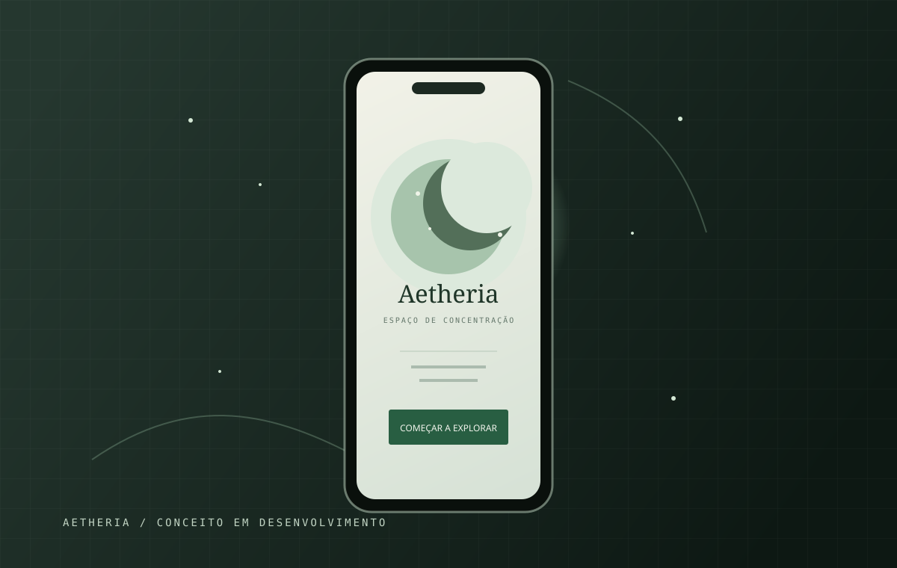
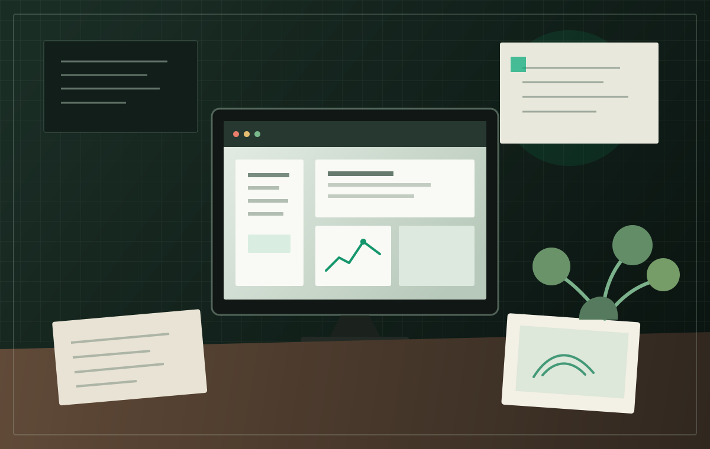

NexoraTech
Sistema web para criação e gerenciamento de orçamentos com foco em eficiência e clareza de dados.
Ver estudo de caso ↗01 / SELEÇÃO DE TRABALHOS
Conceitos e estudos de UX/UI, apresentados pelo problema, processo e decisões de design.
Sistema web para criação e gerenciamento de orçamentos com foco em eficiência e clareza de dados.
Ver estudo de caso ↗
Conceito de aplicativo voltado à concentração, rotinas de foco e produtividade diária.
Ver estudo de caso ↗
Análise e proposta de melhoria para uma experiência digital existente, focando na jornada do usuário.
Ver estudo de caso ↗